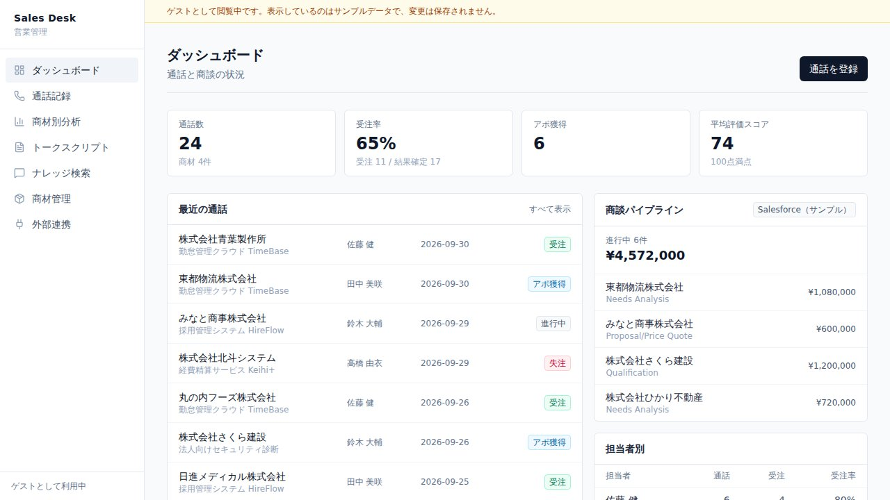

01 / Challenge
営業の成功・失敗が個人の感覚にとどまり、どの話し方が受注につながったのかをチームで共有・再現できない。
Work / 2026
営業電話の録音を文字起こし・分析し、商材ごとに「受注につながる進め方」を蓄積する営業管理ツール。

営業の成功・失敗が個人の感覚にとどまり、どの話し方が受注につながったのかをチームで共有・再現できない。
通話録音から文字起こし・話者分離を行い、受注／失注の要因、懸念への返し方、営業へのフィードバックを自動で作成。商材別の勝ちパターン集計、トークスクリプト作成、過去通話をもとにしたナレッジ検索に加え、Zoom Phone の録音取り込みと Salesforce への活動記録に対応。
Next.js（App Router）/ React / TypeScript / Tailwind CSS。データと認証は Supabase（PostgreSQL・pgvector）、文字起こしは AssemblyAI、分析と生成は Claude API。外部連携は Zoom Phone（Server-to-Server OAuth）と Salesforce（OAuth Client Credentials）。
このページのデモは、ログイン不要でサンプルデータの全画面を操作できる静的版です。